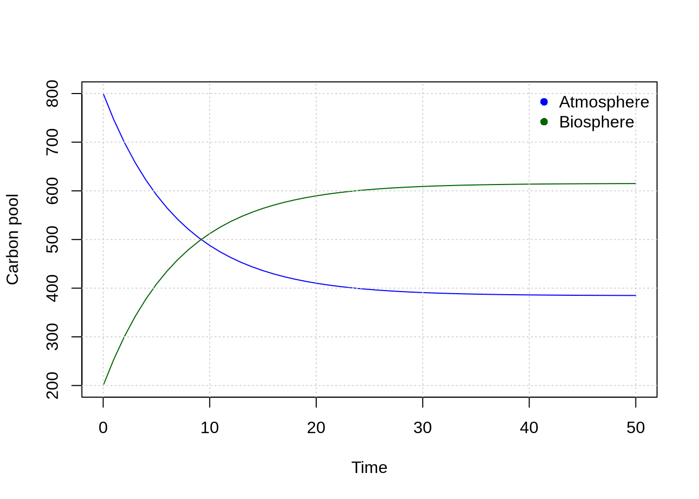
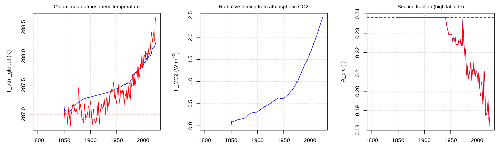

1 Week 1: Building a Simple Carbon Cycle Model
1.1 Motivation
In this tutorial, you will learn how to:
- Access Queen’s University High Performance Computer
- Build a simple numerical model
- Run Queen’s University Conceptual Earth System Model (QUEST
All this work involves the programming languag R. Rather than learning R systematically, we will introduce R concepts as we need them. Let’s now start by gaining access to Queen’s University High Performance Computer.
1.2 Queen’s University High Performance Computer
Follow these steps to run RStudio on Queen’s High Performance Computer:
- Log into: https://login.cac.queensu.ca/
- Click on “Jupyter Server”
- Select Python version 3.11.5
- Select your Slurm Account
- Set your Memory (GB) to 16
- Set your Runtime (in hours) to the number of hours you wish to work (e.g. 3)
- Click on “Launch”
- Click on “Connect to Jupyter” once the button appears
- On the top left you see “Filter available modules …”
- Inside that box write “rstudio”
- Under Available Modules, hover over “rstudio-server/4.5” and click on the load button. It is important that you choose version 4.5. No other version will work properly.
- In the Launcher/Notebook, click on the RStudio icon
- A new window appears with RStudio
- Copy the tutorial template to your home directory:
file.copy(
from = "/global/home/hpc5112/ENSC430/shared_files/W01_FirstName_LastName.Rmd",
to = getwd(),
recursive = TRUE
)Open the
W01_FirstName_LastName.Rmdfile that you just copiedThis is a template R Markdown file for completing the tutorial
Markdown allows you to integrate text, code, and figures
You can run any code inside code chunks and add any comments as text outside the code chunks
Each week you will complete one tutorial and submit it in onQ
All questions are directly answered in onQ
Let’s begin by learning the basic R syntax
1.3 RStudio
We will use RStudio to work with R. RStudio provides several areas that you will use throughout the course:
- Source: Where you write and save your R code and R Markdown documents.
- Console: Where R executes your code and displays the results.
- Environment: Where you can see the objects that you have created in R.
- Files: Where you can access the files in your current project.
- Plots: Where R displays figures that you create.
1.4 R Markdown
You will complete the tutorials using R Markdown. R Markdown allows you to combine text, R code, and figures in a single document. This makes it possible to document your analysis and produce a complete report from the same file. R Markdown uses simple formatting rules. For example, one hash symbol (#) creates a large heading. Two hash symbols (##) creates a smaller heading. An asterisk (*) creates a bullet point. R code is placed inside code chunks. A code chunk begins with three backticks followed by the letter r enclosed in curly brackets and ends with three backticks.
1.5 From math to code
The purpose of this exercise is to translate a mathematical model into computer code in order to solve the model numerically. We will start with the simple carbon cycle model discussed in class. To recall, the model consists of a set of two Ordinary Differential Equations (ODEs):
\[ \frac{dA}{dt} = k_{ba} B - k_{ab} A \]
\[ \frac{dB}{dt} = k_{ab} A - k_{ba} B \]
where \(A\) is the atmospheric carbon pool and \(B\) is the biosphere carbon pool. Let us now learn step-by-step how to implement this in R.
1.6 Basics
In your R markdown document, write:
A <- 800
B <- 200The symbol <- assigns a value to a variable. After running this code, A contains the value 800 and B contains the value 200. You can run the code line-by-line by putting the cursor in the first line and then hit Ctrl Enter. The instructions appear in the console at the bottom. This technique is very helpful for trying to understand what the code is doing. Another way to run the code is by clicking on the icons on the top-right of each code chunk. You can inspect the values by simply typing their names in the console or by looking at the Environment panel on your right-hand side:
A
BYou can also perform calculations:
A + B
A / BOur model contains two exchange rates expressed in per unit of time (e.g. per year):
k_ba <- 0.05
k_ab <- 0.08We can use these parameters in calculations:
dA <- k_ba * B - k_ab * A
dB <- k_ab * A - k_ba * BHere, A and B are the carbon pools (PgC) in the atmosphere and biosphere, respectively. The variables dA and dB are the corresponding time derivatives. They show how both pools change over time. Notice that R uses * for multiplication.
Quiz Question 1: What are the units of dA and dB?
Inspect the calculated tendencies.
Quiz Question 2: Is the atmosphere gaining or losing carbon at the initial state?
Quiz Question 3: Is the biosphere gaining or losing carbon at the initial state?
Quiz Question 4: What is the sum of dA and dB?
1.7 Time
Numerical models calculate how a system changes over time. Here we use a time step of one year and simulate 50 years:
dt <- 1
t_end <- 50
times <- seq(0, t_end, by = dt)Note that seq() creates a sequence of numbers. Let’s inspect the variable time:
Quiz Question 5: How many time points are included in the simulation?
1.8 Numerical Integration
Euler integration is the most basic numerical integration technique. The idea behind Euler integration is simple. All you do is you take the current state and add the change for the next time step:
\[ A_{t=2} = A_{t=1} + \frac{dA}{dt} \Delta t \]
In R, we can write:
A <- A + dA * dt
B <- B + dB * dtRun both lines and inspect the new values of A and B. We have advanced the model by one time step.
Quiz Question 6: Has the amount of carbon in the atmosphere increased or decreased during the first time step?
1.9 For Loops
We want to repeat this calculation for each time step. R uses a for loop to repeat a block of code:
for (i in 1:5) {
print(i)
}The variable i takes the values 1, 2, 3, 4, and 5. Everything between { and } is repeated for each value of i. Our model will use a loop to advance the simulation one time step at a time. Before doing this, however, we need somewhere to store the results.
1.10 Storing model output
We want to save the value of A and B at every time step. The function numeric() creates an empty numerical vector:
Inspect A_out and B_out. Let us now store the initial conditions in the first position:
A_out[1] <- A
B_out[1] <- BSquare brackets are used to access individual elements of a vector. Inspect A_out and B_out again. The first position exists, but the second position has not yet been filled with a model result.
1.11 Building a model
We can now put everything together
# Initial values
A <- 800
B <- 200
# Parameter values
k_ba <- 0.05
k_ab <- 0.08
# Integration settings
dt <- 1
t_end <- 50
times <- seq(0, t_end, by = dt)
# Store results
A_out <- numeric(length(times))
B_out <- numeric(length(times))
# Store initial values
A_out[1] <- A
B_out[1] <- B
# Euler integration
for (i in 2:length(times)) {
# Calculate tendencies
dA <- k_ba * B - k_ab * A
dB <- k_ab * A - k_ba * B
# Update state variables
A <- A + dA * dt
B <- B + dB * dt
# Store results
A_out[i] <- A
B_out[i] <- B
}Inspect A_out and B_out.
Quiz Question 7: What happens to the atmospheric carbon pool over the course of the simulation?
Quiz Question 8: What happens to the biosphere carbon pool?
1.12 Conservation of mass
Our model only transfers carbon between the atmosphere and biosphere. It does not add or remove carbon from the system. Therefore, the total amount of carbon (\(A + B\)) should remain constant over time. We can calculate the total carbon at every time step to verify whether carbon is conserved:
total_out <- A_out + B_out
print(total_out)Quiz Question 9: Does the total amount of carbon change during the simulation?
This is an important model diagnostic. It is possible to artificially create or destroy carbon due to coding errors or a numerical integration time step that is too large.
1.13 Data frame
Let’s combine the results in a data frame:
output <- data.frame(
time = times,
A = A_out,
B = B_out,
total = total_out
)A data frame is a table containing different variables. You can inspect it using:
Individual columns can be accessed using $. For example, we can find the maximum atmospheric carbon pool:
max(output$A)Quiz Question 10: What is the maximum atmospheric carbon pool during the simulation?
1.14 Data vizualization
Let’s plot the output from our simple carbon cycle model. The most simple plotting code would be:
plot(x = output$time, y = output$A)This only includes one variable. To add another variable use the lines() command:
Now, let’s use only lines (type), add colors (col) and a legend (legend), and ensure that the y-axis encloses all values (range):
1.15 Modifying the model
Change the exchange rate: The advantage of implementing a model in code is that we can easily change its assumptions and investigate what happens. Run the model again after changing k_ba <- 0.05 to k_ba <- 0.10.
Quiz Question 11: How does increasing the rate of transfer from the biosphere to the atmosphere affect the equilibrium carbon pools?
Change the initial conditions: Reset k_ba to 0.05, change the initial conditions so that A = 500 and B = 500, and rerun the model.
Quiz Question 12: How do the equilibrium carbon pools compare with those from the original simulation?
Change the time step: Reset the initial conditions to A = 800 and B = 200. Now change the step size to 10 years (dt <- 10) and rerun the model.
Quiz Question 13: How does increasing the time step affect the numerical solution?
Let’s increase the simulation length to 50 years and choose a step size of 1000 years
Quiz Question 14: Do we still conserve carbon?

1.16 QUEST
In this course you will run climate simulations using Queen’s University Conceptual Earth System Model (QUEST). Run the code chunk below to create a run_quest folder and to copy the QUEST configuration files into it:
myDir <- file.path(getwd(), "run_quest")
dir.create(myDir)
file.copy(
from = "/global/home/hpc5112/ENSC-ESM/shared_files",
to = myDir,
recursive = TRUE
)Let’s conduct a test run:
# Load the QUEST package:
library(quest)
# Set the path to the configuration files:
config.path <- file.path(getwd(), "run_quest/config")
# Load the configuration files:
config <- config_load(path = config.path)
# Define the simulation years (start year BC, end year, time step):
years <- seq(1850, 2024, by = 1)
# Run QUEST:
output <- core_run_esm(config, times = years)## Warning in mean.default(out$N_total): argument is not numeric or logical: returning NA
# Plot QUEST output:
utils_plot(config, output, my.xlim = c(1950, 2024), PNGfile = TRUE)The
utils_plot()function produces a PNG file with the model output (output.png). If all went well, the resulting figure file is now in your home directory. Open it using theFilespanel on your right and have a look at at its content. Blue lines represent model output. Red lines, if available, represent observations.Sometimes we just want to quickly plot individual variables. You can define your variables of interest using the
variablesoption, and turn off the generation of a PNG file by setting thePNGfileoption to FALSE:
par(mfrow = c(1, 3), mar = c(3, 5, 2, 1))
utils_plot(config, output, variables = c("T_atm_global", "F_CO2", "A_sic"), my.xlim = c(1800, 2024), PNGfile = FALSE)
Quiz Question 15: Interpret the relationship between the three variables.
You can also explore the output directly. Let’s make a statistical summary of all variables:
summary(output)You can store your output as a .rds file for later use:
saveRDS(output, "testRun.rds")Then you can access the file content like this:
data <- readRDS("testRun.rds")- To extract a single variable:
The way how you will conduct experiments with QUEST is by conducting experiments using different model configurations. Let’s see what type of model configurations there are:
## Length Class Mode
## config.path 1 -none- character
## params_ranges 89 -none- list
## flags 11 -none- list
## spy 1 -none- numeric
## obs_tran 5 data.frame list
## var_meta 98 -none- list
## cost_weights 6 -none- list
## params 89 -none- list
## prescribed_values 2 -none- list
## forcing 3 -none- list
## spd 1 -none- numeric
## prescribed_diagnostics 1 -none- list
## prescribed_fluxes 9 -none- list
## initial_values 35 -none- numeric
## gC_to_molN 1 -none- numeric
## params_max 58 -none- list
## params_min 58 -none- list
## obs 38 -none- list
## params_calib 58 -none- listYou see there are many different configuration settings. One of the more important ones is flags:
print(config$flags)## $run_AirSeaCarbon
## [1] FALSE
##
## $run_atmosphere
## [1] TRUE
##
## $run_ocean
## [1] TRUE
##
## $run_npzd
## [1] FALSE
##
## $run_land
## [1] FALSE
##
## $run_sic
## [1] FALSE
##
## $run_icesheets
## [1] FALSE
##
## $anthropogenic_emissions
## [1] FALSE
##
## $prescribed_CO2
## [1] TRUE
##
## $prescribed_seaice
## [1] TRUE
##
## $diagnose_carbonates
## [1] FALSEFor instance, if $run_ocean is TRUE then you have configured the model such that the ocean dynamically evolves. If it is set to FALSE then all its prognostic variables remain static and do not evolve in time. You can change those settings by editing the config_flags.R file located in run_quest/config.
1.17 QUEST simulations
- Run an experiment using a different model configuration and plot variables of your choice.
1.19 Appendix
If you enjoy R and want to learn more, I invite you to review the tutorial below. This is voluntary and will not be graded. The main elements of the tutorial below are:
- Operators:
+, -, *, /, ^ - R objects (vector, data frame, matrix, array, list)
- Subset objects
- Control structure: loops, if-else statements
- Generating data: sequence and random data
- Defining a function
- Plotting data
1.19.1 Operators
- In R, you use the following syntax to assign a value to a variable.
x <- 1
print(x)- The variable x used above is an example of an R object. The
printstatement prints the value of the object x. - Once you assign values to R objects, you can use the following arithmetic operators to perform calculations.
a <- 2
b <- 3
# Addition
c <- a + b
print(c)
# Subtraction
c <- a - b
print(c)
# Multiplication
c <- a * b
print(c)
# Division
c <- a / b
print(c)
# Exponentiation
c <- a^b
print(c)Paste the code above into your markdown document and run it
See what happens when you insert a
#, e.g.# print(c)
1.19.2 Objects
- All objects have two intrinsic attributes: mode and length
- The mode is the basic type of the elements of the object
- There are four main modes: numeric, character, complex, and logical (FALSE or TRUE)
- The length of an object is the number of elements of the object
What is the length of
b <- c(1:10)?Next to mode and length, there are different types of objects, namely vector, data frame, matrix, array, and list
# Vector with one element
a <- 2
print(a)
# Vector with four elements
b <- c(7, 5, 2, 9)
print(b)
# Data frame
x <- c(3, 7, 2, 4)
y <- c(42, 67, 21, 33)
df <- data.frame(x, y)
print(df)
# Matrix: in R, a matrix has 2 dimensions only)
x <- c(1, 2, 3, 4, 5, 6, 7, 8, 9, 10)
a <- matrix(x, nrow = 2)
print(a)
# Array: an array has more than 2 dimensions
x <- c(1, 2, 3, 4, 5, 6, 7, 8, 9)
a <- array(data = x, dim = c(3, 3, 3))
print(a)
# List
a <- c(3, 2, 5, 6)
b <- c(TRUE, FALSE)
c <- c("apples", "pears", "plums")
d <- 5
l <- list(a, b, c, d)
print(l)Make a vector with a length equal to 5
Make a data frame with 4 columns and 5 rows
Make a matrix with 4 columns and 5 rows
Make an array with 4 columns, 5 rows, and 3 layers
Make a list that contains numbers and words (i.e. strings)
Let’s learn how to subset vectors, data frames, matrices, arrays, and lists
Example: Vector
# Create a vector
vector_data <- c(10, 20, 30, 40, 50)
# Print the vector
print("Full Vector:")
print(vector_data)
# Subsetting by Index
third_element <- vector_data[3]
print("Third element:")
print(third_element)
# Subsetting by Multiple Indices
subset_indices <- vector_data[c(1, 3, 5)]
print("Subset (First, Third, and Fifth elements):")
print(subset_indices)
# Subsetting by Logical Condition
subset_condition <- vector_data[vector_data > 25]
print("Subset (Elements greater than 25):")
print(subset_condition)Change the code so that you subset the fourth and fifth element of the vector
Example: data frame
# Create a data frame
data <- data.frame(
Name = c("Alice", "Bob", "Charlie", "David", "Eve"),
Age = c(23, 25, 30, 22, 29),
Gender = c("F", "M", "M", "M", "F"),
Score = c(85, 90, 75, 88, 92)
)
# Print the data frame
print("Full Data Frame:")
print(data)
# Subsetting by Columns
subset_columns <- data[, c("Name", "Score")]
print("Subset by Columns (Name and Score):")
print(subset_columns)
# Subsetting by Rows and Columns
subset_rows_cols <- data[1:3, c("Name", "Age")]
print("Subset by Rows and Columns (First 3 rows, Name and Age):")
print(subset_rows_cols)
# Subsetting by Condition
subset_condition <- subset(data, Age > 25)
print("Subset by Condition (Age > 25):")
print(subset_condition)Change the code so that you only extract the Age. This can be done by writing
data$AgeExample: matrix
# Create a matrix
matrix_data <- matrix(
1:12, # Data
nrow = 4, # Number of rows
ncol = 3, # Number of columns
byrow = TRUE # Fill the matrix by rows
)
# Print the matrix
print("Full Matrix:")
print(matrix_data)
# Subsetting by Rows and Columns
subset_rows_cols <- matrix_data[1:2, 1:2]
print("Subset (First 2 rows, First 2 columns):")
print(subset_rows_cols)
# Subsetting by Specific Rows
subset_specific_rows <- matrix_data[c(1, 3), ]
print("Subset (First and Third rows):")
print(subset_specific_rows)
# Subsetting by Specific Columns
subset_specific_cols <- matrix_data[, c(2, 3)]
print("Subset (Second and Third columns):")
print(subset_specific_cols)Change the code so that you only show the second column.
Example: array
# Create an array
array_data <- array(
1:24, # Data
dim = c(3, 4, 2) # Dimensions (3x4x2 array)
)
# Print the array
print("Full Array:")
print(array_data)
# Subsetting by Indices
element <- array_data[1, 2, 1]
print("Element at (1, 2, 1):")
print(element)
# Subsetting by Slices
slice <- array_data[, , 1]
print("First slice (all elements in the first third dimension):")
print(slice)
# Subsetting by Specific Rows and Columns in a Specific Dimension
subset_array <- array_data[1, , 2]
print("First row, all columns, in the second slice:")
print(subset_array)Change the code so that you only show the second slice
Example: list
# Create a list
list_data <- list(
Name = "Alice",
Age = 25,
Scores = c(85, 90, 88),
Address = list(
Street = "123 Princess St",
City = "Kingston",
Postal = "K7L4L1"
)
)
# Print the list
print("Full List:")
print(list_data)
# Subsetting by Element Name
name <- list_data$Name
print("Name element:")
print(name)
# Subsetting by Index
age <- list_data[[2]]
print("Second element (Age):")
print(age)
# Subsetting a Nested List
city <- list_data$Address$City
print("City element in Address:")
print(city)- Change the code so that you only show the postal code
1.19.3 Control structure
Control structures determine the order in which statements are executed in a program. Two important examples are loops and conditional statements
Loop example
# For loop to print numbers from 1 to 5
for (i in 1:5) {
print(i)
}Change the code so that you loop over the strings apple, grape, and mango
Conditional statement example
1.19.4 Generating data
- Many times you need to generate data, e.g. a sequence that ranges from 1 to 10. Instead of writing out each number, there are functions that do that for you.
# Sequence from 1 to 10 with step size 1
x <- 1:10
print(x)
# Sequence from 1 to 10 with step size 0.5
x <- seq(1, 10, 0.5)
print(x)
# Vector that repeats the value one for ten times
x <- rep(1, 10)
print(x)
# Random sequences with uniform distribution between zero and one
x <- runif(n = 5, min = 0, max = 1)
print(x)- Generate 10 random values that range between 5 and 10
1.19.5 Defining a function
- Often you need to execute the same operation many times. To do this efficiently you can define a function and then apply this function whenever you need it.
# Define a function to add two numbers
add_numbers <- function(a, b) {
# Calculate the sum
sum <- a + b
# Return the sum
return(sum)
}
# Print the function definition
print("Function Definition:")
print(add_numbers)
# Call the function with arguments 3 and 5
result <- add_numbers(3, 5)
# Print the result
print("Result of add_numbers(3, 5):")
print(result)- Define a function that multiplies numbers
1.19.6 Plotting data
- Add x and y labels using
xlabandylab
x <- seq(1:10)
y <- x^2
plot(x, y,
xlab = "ENSC430 lectures attended",
ylab = "Academic Performance"
)- Make it a line plot using
type = "l"
- Add more lines using
lines()
- Make each line a different color using
col
- Adjust x and y axis using
xlimandylim
x <- seq(1:10)
y1 <- x^2
y2 <- x^3
plot(x, y1,
type = "l",
xlim = c(-5, 10), ylim = c(-20, 100)
)
lines(x, y2)- Making square axis using
par(pty="s")andasp = 1
- Plot the sinus function with x values ranging from 0 to 10
Many times we need to add fancy text that includes Greek letters, exponents, and subscripts in Figures. That can be done using the LaTeX language, which is made available in R through the latex package. Text written in LaTeX is enclosed by dollar signs. Here some examples:
Greek letters:
$\alpha$yields \(\alpha\)Exponents:
$m^{-2}$yields \(m^{-2}\)Subscripts:
$x_iyields \(x_i\)
1.19.7 Review
Congratulations, you made it to the end of this tutorial. Let’s list the key concepts you have learned today:
- Operators:
+, -, *, /, ^ - Objects: vector
c(), data framedata.frame(), matrixmatrix(), arrayarray(), listlist(), - Subset objects
- Control structure: loops, if-else statements
- Generating data: sequence and random data
- Defining a function
- Plotting data